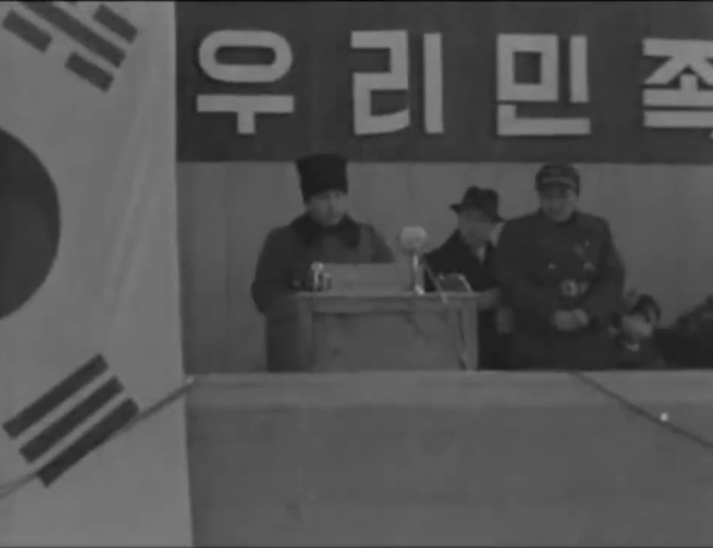
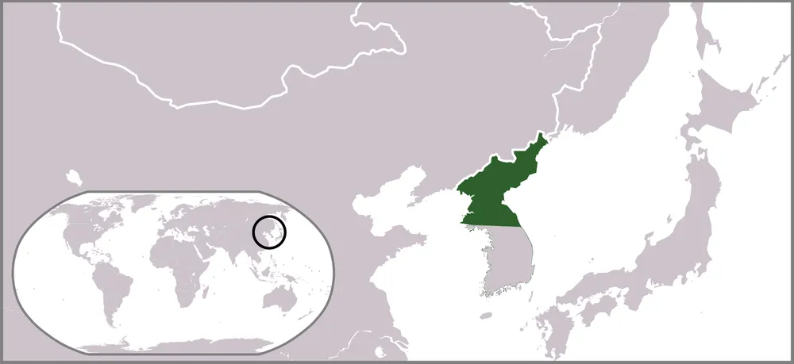
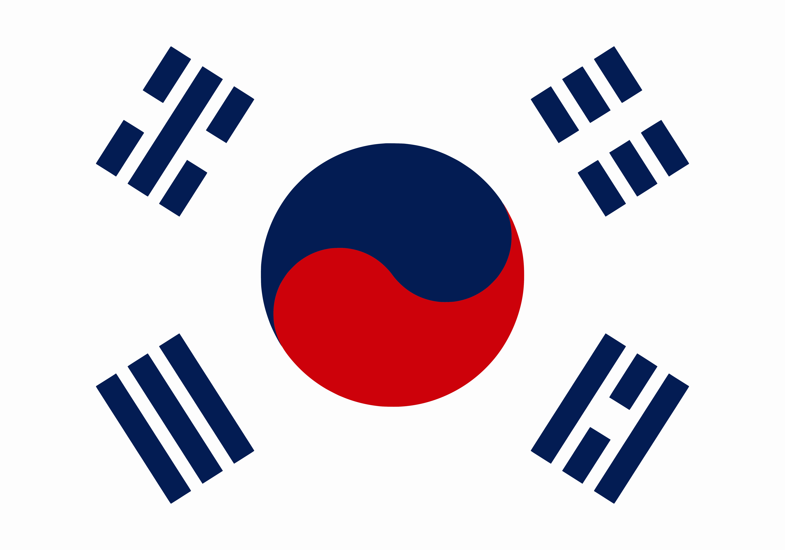
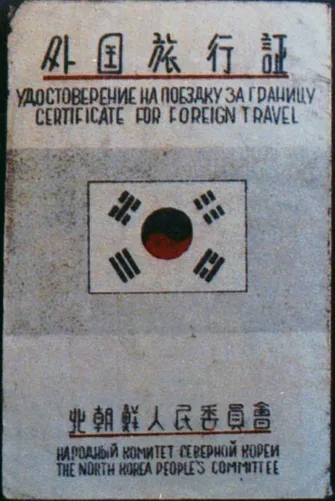

이 영상은 1948년 2월 8일, 조선인민군 창설식을 기록한 영상인데..
특이하게 군악대가 올드 랭 사인 곡조의 대한민국 애국가를 연주하고 있는데다

심지어 연설하는 김일성 옆에 태극기가 있는 것을 볼 수 있음

이는 북한 정부 수립 이전, 북조선인민위원회가 국가를 '올드 랭 사인 애국가'로 지정했기 때문이며

국기도 태극기로 지정했지만 도안이 통일되지 않아 약간 달랐는데다

북조선인민위원회가 발급한 외국여행증 표지에도 태극기가 그려져 있었음 ㄷㄷ...
오 이건 처음 보네